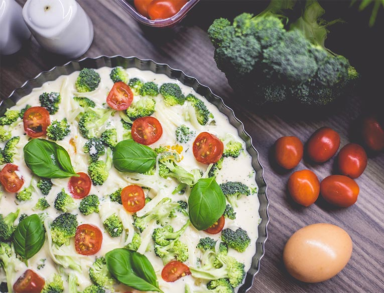
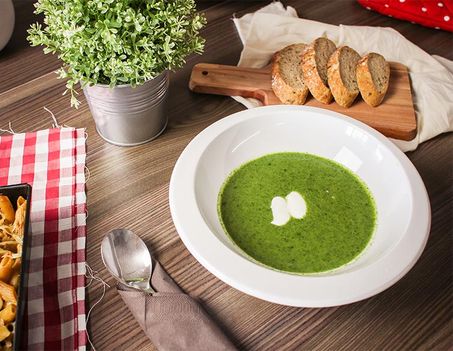

Health Benefits of Broccoli
-
Cancer Prevention
Broccoli contains glucoraphanin, which the body processes into the anti-cancer compound sulforaphane. This compound rids the body of H. pylori, a bacterium found to highly increase the risk of gastric cancer. Furthermore, broccoli contains indole-3-carbinol, a powerful antioxidant compound and anti-carcinogen found to not only hinder the growth of breast, cervical and prostate cancer, but also boosts liver function.
Broccoli shares these cancer fighting, immune boosting properties with other cruciferous vegetables such as cauliflower, Brussels sprouts and cabbage. -
Reducing Allergy Reaction and Inflammation
Broccoli is a particularly rich source of kaempferol and isothiocyanates, both anti-inflammatory phyto nutrients. Research has shown the ability of kaempferol to lessen the impact of allergy-related substances on our body. Broccoli even has significant amounts of omega 3 fatty acids, which are well know as an anti-inflammatory.
-
Powerful Antioxidant
Of all the cruciferous vegetables, broccoli stands out as the most concentrated source of vitamin C, plus the flavonoids necessary for vitamin C to recycle effectively. Also concentrated in broccoli are the carotenoids lutein, zeaxanthin and beta-carotene, other powerful antioxidants.
-
Detoxification
Glucoraphanin, gluconasturtiin and glucobrassicin are special phytonutrients that support all steps in the body’s detox process, including activation, neutralization and elimination of unwanted contaminants. These three are in the perfect combination in broccoli. Broccoli also contains isothiocyanates (which you read about in inflammation) which help control the detox process at a genetic level.
-
Diet Aid
Broccoli is a good carb and is high in fiber, which aids in digestion, prevents constipation, maintains low blood sugar, and curbs overeating. Along with this, broccoli is also great for weight loss because it is rich in fiber. It is an ideal green vegetable to include in your salads and completing your five coloured vegetables everyday. In addition to this, broccoli also contains proteins, making it suitable for vegetarians that are otherwise not able to complete their protein requirement.
About broccoli
Recipes with broccoli
Broccoli, tomato & cheese omelette
Ingredients
Serves: 2
- 3 large eggs
- 1 large egg white
- 1 tablespoon milk
- pinch of salt
- 1 cup cooked chopped broccoli
- 1 large roma tomato, sliced
- ½ cup (55 g) coarsely grated reduced-fat Swiss-style cheese
Preparation:
10 minCook:
8 minReady in:
18 minCooking process
- Coat a 25 cm non-stick frying pan with non-stick cooking spray. Heat over medium heat. Beat eggs, egg white, milk and salt in a medium bowl until combined. Add broccoli. Pour into pan, spreading evenly. Cook, without stirring, until the mixture starts to thicken slightly around the edge, about 1 minute. Run a thin spatula around the edge of the pan, lifting mixture so the uncooked portion flows underneath the cooked one. Cook until centre is still moist but not runny, about 3 minutes.
- Arrange tomato slices over one half of omelette. Top with cheese. Fold omelette over to cover filling. Reduce heat to low. Cover; cook until the egg component is set but still soft, 3 to 4 minutes. Slide omelette onto serving plate.
Cheese omelette & broccoli, tomato
Ingredients
Serves: 4
- 3 large eggs
- 1 large egg white
- 1 tablespoon milk
- pinch of salt
- 1 cup cooked chopped broccoli
- 1 large roma tomato, sliced
- ½ cup (55 g) coarsely grated reduced-fat Swiss-style cheese
Preparation:
20 minCook:
15 minReady in:
35 minCooking process
- Coat a 25 cm non-stick frying pan with non-stick cooking spray. Heat over medium heat. Beat eggs, egg white, milk and salt in a medium bowl until combined. Add broccoli. Pour into pan, spreading evenly. Cook, without stirring, until the mixture starts to thicken slightly around the edge, about 1 minute. Run a thin spatula around the edge of the pan, lifting mixture so the uncooked portion flows underneath the cooked one. Cook until centre is still moist but not runny, about 3 minutes.
- Arrange tomato slices over one half of omelette. Top with cheese. Fold omelette over to cover filling. Reduce heat to low. Cover; cook until the egg component is set but still soft, 3 to 4 minutes. Slide omelette onto serving plate.